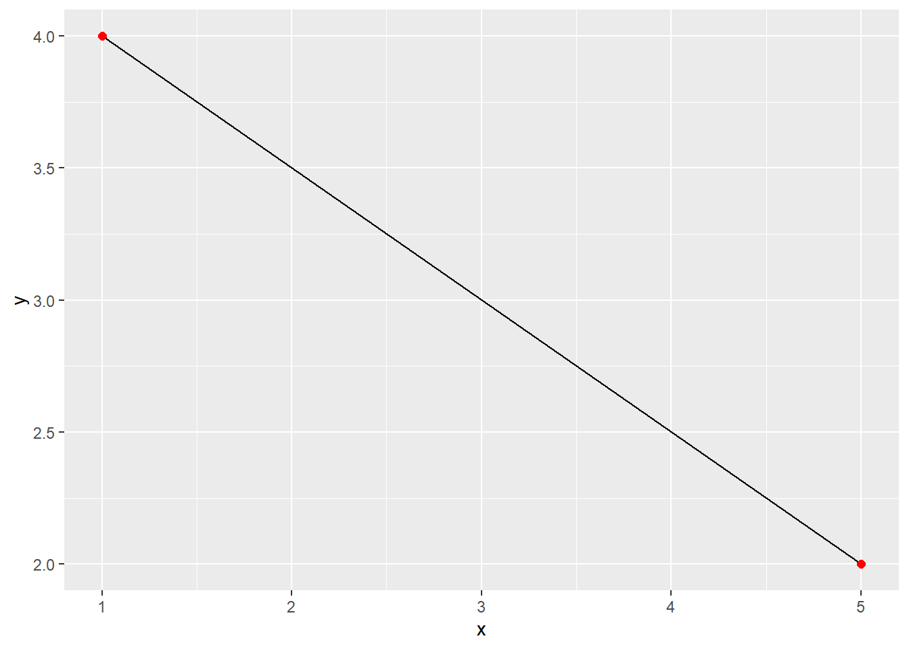

Statistical Thinking
2020-08-01
Chapter 1 Preliminaries
Science alone of all the subjects contains within itself the lesson of the danger of belief in the infallibility of the greatest teachers of the preceding generation. - Richard Feynman
This book is designed to provide students, analysts, and practitioners (the collective “we” and “us”) with an elemntary, but practical, approach to the use of statistical thinking especially for business decisions. There are many decisions that managers make. In finance there are two primary decisions: investment and raising funds to make an investment. In marketing there are three top line decisions: product mix, sales mix, customer retention and expansion, market launch and retirement. In operations, from a supply chain point of view there are facilities choices, production, distribution, scheduling, and start up - shut down - idling decisions.
This book covers data based decision making from various areas in the organization, from analyzing market drivers such as price and product features, to operational scheduling, hiring, laying off, and inventory, to studying global relations among macroeconomic events and participants. The topics in the book begin with exploratory data analysis with descriptive statistics, layer probabalistic models on top of empirical distributions, and infer ranges of estimates and tests of hypotheses that underly any and every decision.
1.1 The basic problem
The premises of this book include the following chain of reasoning:
Decisions occur in the context of a compound of raw data, models, priorities, and choices
New decisions create new data
New data informs new explanations of the relationships in the data
Valid, probably speaking, relationships in the data support decisions
How can we analyze data? We follow a three step process:
Collect credible, valid data that is relevant to the decision at hand.
Describe and explain the data by examining the shape of each data element and the relationships among the data elements.
Infer the acceptance or rejection of a decision based on the probable range of estimates of the expectation of a data element.
We will be taking great pains to define exactly what we mean by expectations and ranges throughout the book. On top of those pains we will be very precise about beliefs in the possible and probable range of expectations.
1.2 Analytics
By its very nature the science of data analytics is disruptive. That means, among many other things, that much attention should be paid to the scale and range of invalid, as yet not understood, outlying, and emerging trends. This is as true within each domain of knowledge including business decisions. Outliers are where value is gain and lost. Spikes in interest rates, commodity prices, information about the reputation of an organization, as well as the doldrums of a very slow news day, are all deviations from a supposed trend. Decisions live in the deviation from the trend. Analytics, especially those based in probability and statistics, is all about the analysis of deviations from current and projected beliefs, otherwise known as the trend.
1.3 Readiness for statistical thinking
Statistical thinking requires that you are prepared in several areas:
Ability to think and analyze logically
Apply logic and set theory to partition ranges of statistical measures
Algebraicly understand absolute value, logarithmic, exponential, and simultaneous equations
Evaluate complex formulae
Analyze the geometry and parameters of linear equations
Understand area under a curve and rates of change
Here are several statistics readiness diagnostic questions for you to as you begin your journey into data analytics. If you have problems with calculations, logic, formulae, algebra, ponder this as the opportunity to surface them, confront them, and resolve them.
1.3.1 Solve this riddle
Logic is used at least implicitly in statistical reasoning. When we solve equations we are using logic. Here are two logic operators. An operator is an action that transforms a logical statement.
The negation operator \(\neg\) means this: The statement \(\neg{A}\) is true if and only if A is false.
The conjunction operator \(\wedge\) or \(\&\) means this: The statement \(A\wedge{B}\) is true if A and B are both true; otherwise, it is false.
Consider the following logic statement where \(p\) is “the sky is blue” and \(q\) is “the weather is sunny.”
\[ \neg((p \wedge q) \wedge \neg(p \wedge q)) \]
Is the above logical statement above true or false?
Always false
Always true
Ambiguous: sometimes true, sometimes false
1.3.2 Join these sets
Consider now the following statement, where \(x\) is the number of times (natural number) you can sink a basketball in 5 minutes:
\[ (x>2) \wedge (x<4) \]
What is the resulting value of \(x\)?
- \(x=1\)
- \(x=5\)
- \(x=3\)
<button onclick=“showText(”truth-1“)”>show / hide
1.3.3 Partition this board
Along a 6 meter straight piece of wood a cabinet maker wants to mark off three sections of equal length. Use the logical symbol \(\vee\), for example, \(A\vee{B}\) means either A or B, just like the union of two sets. Let \(x\) be a position in meters along the piece of wood. Here are three possible expressions:
\((0<x)\vee(x>4)\)
\((2<x)\vee(x>4)\)
\((2<x)\vee(x\geq{4})\)
Which statement describes the first and last sections of the board?
Statement 1
Statement 2
Ambiguous: sometimes one value, sometimes another
Statement 3
1.3.4 Calculate this expression
For \(p=0.25\), \(n=3\), and \(r=2\), and not using a calculator,
What is the numerical value of \(p^n(1-p)^{n-r}\)? 1. well over 0.10 2. a little over 0.01 3. practically zero 4. infinite
1.3.5 Solve this equation
Consider the following equation:
\[ ln(|2x-1|)=0 \]
The solution for \(x\) is:
\(x=-1\)
\(x=-1\) or \(x=0\)
\(x=0\) or \(x=1\)
There is no valid solution.
1.3.6 Summation calculations
Given two vectors, \(X\) and \(Y\)
\[ X = [5, 6, 4, 3 ] \]
and
\[ Y = [3, 2, 2, 1 ] \]
Calculate \(Z=4\Sigma_1^4X_iY_i-\left(\frac{\Sigma_1^4 X_i}{4}\right)\left(\frac{\Sigma_1^4 Y_i}{4}\right)\)
\(Z=-106\)
\(Z=143\)
\(Z=8\)
There is no valid calculation possible.
1.3.7 Weighted average
Given the vector \(X\)
\[ X = [5, 6, 4, 3 ] \]
suppose each element of \(X\) is wieghted by the corresponding element of the weight vector \(w\)
\[ w = [.2, ,5, .2, .1 ] \]
The weighted average of \(X\) is:
5.1
1.125
18
There is no valid calculation
1.3.8 Linear coefficients
Two points on a scatter plot are connected by a straight line \(y=mx+b\). Calculate the slope \(m\) and y-intercept \(b\) of the line.

The slope \(m\) and y-intercept \(b\) are:
\(m=0.5,1.5\)
\(m=1,6.5\)
\(m=-0.5,4.5\)
There is no valid calculation possible.
1.3.9 Linear simultaneous equations
Here are two simultaneous linear equations in \(x\) and \(y\).
\[ \begin{align} 12x+152y & = 141 \\ 152x+1940y & =1802 \end{align} \]
Choose the best solution for \((x,y)\) (approximately):
\((0.136,0.99)\)
\((-2.07,1.09)\)
\((0.1,74,0.14)\)
There is no valid calculation possible.
1.3.10 Elasticity: a little light calculus
Suppose that
\[ y = ax^b \]
describes the production of \(y\) widgets using \(x\) labor-hours. What is the elasticity of production with respect to labor-hours if \(a=1\) and \(b=1.5\)?
The elasticity of \(y\) with respect to \(x\) is:
1.0
1.5
0.5
There is no valid calculation possible.
1.3.11 Area under a curve
The probability \(p\) that the amount of time in hours \(t\) it takes for a worker to complete a task has been found by an analyst to be
\[ p(t) = e^{-t} \]
Find the area under this curve from \(t=0\) to \(t=1\) hours.
The area is:
\((1/e)-1\)
\(1-1/e\)
\(1/e\)
There is no valid calculation possible.
1.3.12 Next steps?
Check your understanding of the answers you produced.
Talking with your instructor or a tutor / counselor in academic resources
If you find a gap in your skills (e.g., how to solve an equation) or your capabilities (e.g., why you might need to solve the equation) you are on your way to learning!
Gaps can, and with the right motivation and opportunity, will be filled. Good luck on your journey.
1.4 Chapter outline
Here is an outline of topics covered by chapter.
1. Preliminaries. This chapter introduces us and reviews some of the basics, .
2. Statistical Reasoning. The components of the statistical thought process and product. A basic model is born along with a foray into the logic embedded in statistical thinking.
3. Data. The many faces of data.
4. Tendency. Data from FRED, Yahoo, and other sources. Empirical characteristics of economic and financial time series. Boostrapping confidence intervals and a stab at managing a list of potential risk and return interactions we will, with much trepidation, call stylized facts.
5. Deviation. Quantile (i.e., Value at Risk) and coherent (i.e., Expected Shortfall) risk measures and a provisional answer the the question about how much capital is needed to support a risky financial decision.
6. The shape of data. Combining risk management with portfolio allocations. Optimizing allocations. Simulating the efficient frontier and answers the question about what combination of assets (and liabilities) returns the highest value for the risk as well as how much cash to hold.
7. Probability. Enough probability to generalize empirical distributions and provide a basis for inference.
8. Uniform, binomial, and Poisson distributions. Three widely useful discrete distributions that also help us approximate continuous distributions.
9. Normal, chi-squared, and Student’s t distributions. All roads often (probably) lead to the normal distribution (central limit theorem at work). Thick tailed distributions can provide more conservative inferences.
10. Confidence interval estimation.
11. Hypothesis testing.